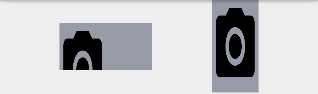

在操作物件背景的過程中，任何Android的開發者應該都會面臨過一個問題：
來自相同來源的Drawable，被指定給數個物件後，只要對一個物件內的Drawable進行參數調整，就會影響到所有的Drawable。
舉例來說，現在畫面上有兩個自帶背景的ImageView，以下簡稱為Image1和Image2：
接著給Image1設定背景，稱作Drawable1：
目前為止如預期顯示，直到我們將Drawalbe1設定給右邊的Image2時：

由於是用同一個Drawable1，所以在Image2改變Drawalbe1的形狀時，可以預期Image1的顯示結果會受到影響。
接著我們再新增一個Drawable2，並設定給Image2：
看起來是如預期的顯示了，接著我們調整Drawable2的alpha值到0.4：
結果依然是同步改變，代表就算使用不同Drawable，只要使用相同的來源就會互相影響。
最終的解法是在設定Drawable2之前，先使用mutate()：
Drawable2 = Drawable1.mutate()
結果如下，兩個Drawable終於有各自的大小和alpha值：
在整個過程中，可以看到以下幾個問題：
為何不同的Drawable會相互影響？ 為何mutate()可以阻斷相互影響？
Something about Drawable 再深入找尋這些問題的解答前，我們需要先了解Drawable產生的過程。一般我們會使用getDrawable()來取得Drawable：
@Nullable public final Drawable getDrawable (@DrawableRes int id) return getResources().getDrawable(id, getTheme()); }
一路會經過Resources：
public Drawable getDrawable (@DrawableRes int id, @Nullable Theme theme) throws NotFoundException return getDrawableForDensity(id, 0 , theme); } public Drawable getDrawableForDensity (@DrawableRes int id, int density, @Nullable Theme theme) final TypedValue value = obtainTempTypedValue(); try { final ResourcesImpl impl = mResourcesImpl; impl.getValueForDensity(id, density, value, true ); return impl.loadDrawable(this , value, id, density, theme); } finally { releaseTempTypedValue(value); } }
接著會走到loadDrawable()：
@Nullable Drawable loadDrawable (@NonNull Resources wrapper, @NonNull TypedValue value, int id, int density, @Nullable Resources.Theme theme) throws NotFoundException { ... final boolean isColorDrawable; final DrawableCache caches; final long key; if (value.type >= TypedValue.TYPE_FIRST_COLOR_INT && value.type <= TypedValue.TYPE_LAST_COLOR_INT) { isColorDrawable = true ; caches = mColorDrawableCache; key = value.data; } else { isColorDrawable = false ; caches = mDrawableCache; key = (((long ) value.assetCookie) << 32 ) | value.data; } ... final Drawable.ConstantState cs; if (isColorDrawable) { cs = sPreloadedColorDrawables.get(key); } else { cs = sPreloadedDrawables[mConfiguration.getLayoutDirection()].get(key); } Drawable dr; boolean needsNewDrawableAfterCache = false ; if (cs != null ) { dr = cs.newDrawable(wrapper); } else if (isColorDrawable) { dr = new ColorDrawable(value.data); } else { dr = loadDrawableForCookie(wrapper, value, id, density, null ); } ... if (dr != null ) { ... cacheDrawable(value, isColorDrawable, caches, theme, canApplyTheme, key, dr); ... } ... return dr; ... }
在這將省略優化cache的步驟，並著重在一開始初始化的過程。進入loadDrawable()後的操作，可以簡化成兩個步驟：
取得Drawable專屬的key值。 使用ConstantState建立一個新的Drawable，或是從頭建立一個新的。
取得Drawable專屬的key值 由程式碼可以看出key是value得來，再往前回看可以看到value在一開始內容是空的，並應是在getValueForDensity呼叫時取得內容：
void getValueForDensity (@AnyRes int id, int density, TypedValue outValue, boolean resolveRefs) throws NotFoundException boolean found = mAssets.getResourceValue(id, density, outValue, resolveRefs); if (found) { return ; } throw new NotFoundException("Resource ID #0x" + Integer.toHexString(id)); }
這邊和以下的outValue都等於是前面提到的value，為了辨別以下將用outValue代替。
然後走到getResourceValue()：
final boolean getResourceValue (@AnyRes int resId, int densityDpi, @NonNull TypedValue outValue, boolean resolveRefs) ... final int block = loadResourceValue(resId, (short ) densityDpi, outValue, resolveRefs); ... } private native final int loadResourceValue (int ident, short density, TypedValue outValue, boolean resolve)
最後是走到native的API，AssetManager對應的C++檔為android_util_AssetManager.cpp 。其中取得outValue的過程簡化如下：
取得ResTable。
ResTable對應的C++檔為ResouceTypes.cpp 。
使用傳入的Id，呼叫ResTable.getResource()取得對應的data，並存入outValue。
呼叫ResTable.resolveReference()來確認拿到的data是否只是另一個Id。如果是則再次呼叫getResource()，這會形成一個迴圈，直到取得真正的data為止。
最後將data複製到outValue，如此我們在Java層的value就擁有實際的data。
使用ConstantState建立一個新的Drawable，或是從頭建立一個新的。 取得value後，就可以算出對應的key，並嘗試取得之前已經建立的ConstantState。在這會切分成以下兩個狀況來取得Drawable：
沒找到對應的ConstantState
有找到對應的ConstantState
沒找到對應的ConstantState 在App啟動的初期，可以預期將無法取得任何已存在的ContantState。於是會呼叫loadDrawableForCookie()：
private Drawable loadDrawableForCookie (@NonNull Resources wrapper, @NonNull TypedValue value, int id, int density, @Nullable Resources.Theme theme) ... final Drawable dr; Trace.traceBegin(Trace.TRACE_TAG_RESOURCES, file); try { if (file.endsWith(".xml" )) { final XmlResourceParser rp = loadXmlResourceParser( file, id, value.assetCookie, "drawable" ); dr = Drawable.createFromXmlForDensity(wrapper, rp, density, theme); rp.close(); } else { final InputStream is = mAssets.openNonAsset( value.assetCookie, file, AssetManager.ACCESS_STREAMING); dr = Drawable.createFromResourceStream(wrapper, value, is, file, null ); is.close(); } } ... Trace.traceEnd(Trace.TRACE_TAG_RESOURCES); return dr; }
最終依照副檔名，選擇解析Xml檔或是建立資料串流來建立Drawable。
有找到對應的ConstantState 在有找到對應ConstantState，代表已經進行過檔案解析並產生Drawable的過程。於是直接呼叫ConstantState.newDrawable()，由於ConstantState為抽象類，在這我們就已最長使用到BitmapDrawable的BitmapConstant為例：
@Override public Drawable newDrawable (Resources res) return new BitmapDrawable(this , res); } private BitmapDrawable (BitmapState state, Resources res) mBitmapState = state; updateLocalState(res); }
所以新舊的BitmapDrawable都會用到同一份BitmapState。
分析到此，可以看出對於Drawable的產生過程，重要的不是Drawable本身，而是ConstantState。要建立新的Drawable，需要透過ConstantState。要做cache，也是針對ConstantState，而不是Drawable。
What is ConstantState 這裡使用BitmapState舉例：
BitmapState(BitmapState bitmapState) { mBitmap = bitmapState.mBitmap; mTint = bitmapState.mTint; mTintMode = bitmapState.mTintMode; mThemeAttrs = bitmapState.mThemeAttrs; mChangingConfigurations = bitmapState.mChangingConfigurations; mGravity = bitmapState.mGravity; mTileModeX = bitmapState.mTileModeX; mTileModeY = bitmapState.mTileModeY; mSrcDensityOverride = bitmapState.mSrcDensityOverride; mTargetDensity = bitmapState.mTargetDensity; mBaseAlpha = bitmapState.mBaseAlpha; mPaint = new Paint(bitmapState.mPaint); mRebuildShader = bitmapState.mRebuildShader; mAutoMirrored = bitmapState.mAutoMirrored; }
如果把其中參數與BitmapDrawable.draw()的內容或是其他函示內容相對照，可看到BitmapState記錄著所有會使用到的參數。所以搭配前面的分析，我們得到以下結論，並給出了前面第一個問題的答案：
因為cache機制，Resource和ConstantState是一對一。給予不同的Drawable相同的Resource，等於共用一個ConstantState。而ConstantState用於繪製，所以調整Drawable參數，就等於對ConstantState進行調整，就會影響到所有Drawable最後呈現的結果。
而如果想要不同的Drawable可以用不同的ConstantState，合理的解法就是在建立新的Drawable時，給予新的ConstantState。所以我們接著不使用getDrawable()，而是自己透過Builder，如BitmapFractoy來建立一個Drawable，如此可以繞過cache機制，最後結果如下：
因此我們確定這樣的做法可以讓擁有相同Resource的Drawable，可以分開操作。
What mutate() does 根據呈現的結果，可以預期mutate()做的事情應該和上述的解法相同：
@Override public Drawable mutate () if (!mMutated && super .mutate() == this ) { mBitmapState = new BitmapState(mBitmapState); mMutated = true ; } return this ; }
依照程式碼的內容來看的確沒錯，mutate()也是為當前的Drawable建立新的ConstantState，從此斷開與另一個Drawable的關係。而且一個Drawable限定只能執行一次mutate()，如此可以避免多餘的ConstantState產生，將低memory leak的機會。
綜合以上，我們也得到另一個結論：
mutate()被設計用來分離相同Resource的Drawable行為，要達到相同效果，使用mutate()將比起直接建立Drawable方便。
What’s more 還有一個問題是在一開始範例演示過程中會產生的：
不同Drawable無法避免alpha的同步，但大小卻可以？
這可以從兩個地方解釋：
BitmapConstant BitmapDrawable.updateDstRectAndInsetsIfDirty()
BitmapConstant 我們知道要決定Drawable繪製範圍，必須要指定Bound。不過BitmapState並沒有直接存放Bound的訊息。
BitmapDrawable.updateDstRectAndInsetsIfDirty() private void updateDstRectAndInsetsIfDirty () ... copyBounds(mDstRect); ... }
在BitmapDrawable.draw()，會呼叫到updateDstRectAndInsetsIfDirty()，並在此呼叫copyBound()來取得Bound並用在後續的canvas.draw()。
由於copyBounds()屬於父類Drawable的函示，在BitmapDrawable中並無覆寫，並且mDstRect也沒有存於BitmapState中，可以判斷範圍是由Drawable決定而不是BitmapState，所以只有屬於BitmapState參數的alpha值可以同時影響。
此點可以透過ImageView驗證：
private void configureBounds () ... if (dwidth <= 0 || dheight <= 0 || ScaleType.FIT_XY == mScaleType) { ... mDrawable.setBounds(0 , 0 , vwidth, vheight); ... } else { ... mDrawable.setBounds(0 , 0 , dwidth, dheight); } } public void setBounds (int left, int top, int right, int bottom) Rect oldBounds = mBounds; ... if (oldBounds.left != left || oldBounds.top != top || oldBounds.right != right || oldBounds.bottom != bottom) { ... mBounds.set(left, top, right, bottom); onBoundsChange(mBounds); } } @Override protected void onBoundsChange (Rect bounds) ... final Bitmap bitmap = mBitmapState.mBitmap; final Shader shader = mBitmapState.mPaint.getShader(); if (bitmap != null && shader != null ) { updateShaderMatrix(bitmap, mBitmapState.mPaint, shader, needMirroring()); } }
ImageView在改變尺寸後，會一路從configureBounds()呼叫到BitmapDrawable.onBoundsChange()，而bound被影響的範圍只到Drawable為止，傳到BitmapDrawable只是為了要調整Shader，但這並不會影響BitmapDrawable的繪製範圍。
Reference